화약류관리기사 (2020-06-06 기출문제)
1과목: 일반화약학
1. 한국산업표준(KS)에서 정한 전기뇌관의 품질 시험항목이 아닌 것은?
- 납판시험
- 내수시험
- 내정전기시험
- 연주시험
(정답률: 77%)

2. 도화선의 점화력 시험에서 유리관내의 제1 도화선과 제2 도화선 사이의 공간 거리는 몇 cm를 두고 시험을 하는가?
- 5cm
- 6cm
- 7cm
- 8cm
(정답률: 58%)
3. 스트레이트 다이너마이트에는 NaNO3, 목탄분, 황, CaCO3등이 함유되어 있다. 이 중 NaNO3의 역할은?
- 산소 공급제
- 발열제
- 고화 방지제
- 위력 증대제
(정답률: 89%)
4. 탄광용 폭약을 제조할 때 감열소염제를 혼합하는 이유로 가장 거리가 먼 것은?
- 폭발 온도를 낮춘다.
- 폭발할 때 불꽃을 적게 한다.
- 폭발 후의 불꽃의 지속시간을 짧게 한다.
- 폭약의 성형을 용이하게 한다.
(정답률: 79%)
5. 다음 중 비전기식뇌관의 특징이 아닌 것은?
- 결선작업이 늦다.
- 쇼크튜브(shock tube)는 정전기, 미주전류, 낙뢰 등에 안전하다.
- 결선 누락을 계측기로 측정 할 수 없는 단점이 있다.
- 지연초시를 다양하게 조절하여 발파효과가 증대 된다.
(정답률: 65%)
6. 모노메칠아민 나이트레이트(MMAN)에 대한 설명 중 틀린 것은?
- 예감제로 쓰이며 폭발열이 150kcal/kg정도로 매우 낮다.
- 흡습성이 매우 크고 물에 잘 용해된다.
- MMA를 질산만으로 중화할 때 생성된다.
- 알킬아민의 질산에스테르 화합물의 일종이다.
(정답률: 44%)
7. 혼합화약류만으로 나열된 것은?
- TNT, 카알릿
- 흑색화약, 헥소겐
- 흑색화약, 카알릿
- 다이너마이트, TNT
(정답률: 73%)
8. 직경이 50mm인 폭약을 감도시험 할 때 A약포와 B약포의 간격을 최대 30cm로 하였더니 A약포의 폭발에 감응되어 B약포가 폭발하였다. 이 때의 순폭도는?
- 6
- 15
- 25
- 35
(정답률: 90%)
9. 다음 화약류 중 폭발속도가 가장 빠른 것은?
- ANFO 폭약
- 무연 화약
- 블라스팅 젤라틴
- 흑색 화약
(정답률: 87%)
10. 저항 1.4Ω의 전기뇌관 10발을 직렬결선하여 제발시키려면 몇 V의 전압이 필요한가? (단, 각선 1m 한 가닥의 저항이 0.021Ω인 발파 모선은 50m이며 발파기의 내부저항은 없고, 뇌관 1개당 소요전류는 2A이다.)
- 30.1
- 32.2
- 39.0
- 45.5
(정답률: 62%)
11. 복합추진제(composite propellant)의 산화제로 사용되지 않는 거은?
- 과염소산암모늄
- 과염소산칼륨
- 질산암모늄
- 질산칼륨
(정답률: 27%)
12. 다음 화학류에 대한 설명으로 옳지 않은 것은?
- 헥소겐은 융점이 80℃로 용융장전이 쉽다.
- 무연화약은 점화가 용이하고 폭속이 폭약보다 느리다.
- TNT는 초안폭약의 예감제가 될 수 있다.
- 니트로글리세린은 다이너마이트의 원료로 사용된다.
(정답률: 74%)
13. 화약류의 타격감도 시험방법으로 옳은 것은?
- 낙추시험
- 가열시험
- 마찰시험
- 순폭시험
(정답률: 63%)
14. 화약류의 제조에 있어 술폰화공정과 질화공정을 따로 하는 것은?
- DNN
- 테트릴
- 니트로글리세린
- 뇌홍
(정답률: 67%)
15. 지연장치가 없고 통전 개시에서 폭발까지의 시간이 3ms미만인 뇌관은?
- 순발전기뇌관
- LP 전기뇌관
- MS 전기뇌관
- HS 전기뇌관
(정답률: 60%)
16. 비전기뇌관에 사용되는 Shock Tube(쇼크튜브)에 대한 설명으로 틀린 것은?
- 외경이 약 3mm이다.
- 심약은 HMX와 흑색화약의 혼합물이다.
- 폭속은 약 2000m/s이다.
- 내경은 1.0 ~ 1.5mm이다.
(정답률: 73%)
17. 다음 화약류에 관한 설명 중 옳은 것은?
- 니트로글리세린은 혼합 화약류이다.
- 화약은 폭연을 이용하여 추진적 폭발의 용도에 사용하는 것이다.
- 폭약은 폭속이 음속이상으로 충격파는 수반하지 않는다.
- 화약류는 조성에 따라 분류하면 화합화약류와 화공품으로 분류한다.
(정답률: 67%)
18. 교질다이너마이트(Gelatine Dynamite)의 직접적인 제조공정이 아닌 것은?
- 배합
- 날화
- 압신
- 유화
(정답률: 62%)
19. 트리니트로톨루엔의 산소평형 값은 얼마인가?
- +1.48
- -1.48
- +0.740
- -0.740
(정답률: 85%)
20. 다이너마이트 원료 중 폭발시에 가스의 발생량 증가와 폭발온도를 높여 폭발위력을 향상시키고 약질 및 비중을 조절하기 위하여 사용되는 것은?
- 니트로글리세린
- 전분
- 질산암모늄
- 소금
(정답률: 56%)
2과목: 발파공학
21. 발파작업표준안전작업지침에서 제시한 발파구간 인접구조물에 대한 피해 및 손상을 예방하기 위한 기준 중 상가(금이 없는 상태)의 허용 진동치는? (단, 건물기초에서의 허용 진동치이다.)
- 0.1cm/s
- 0.2cm/s
- 0.5cm/s
- 1.0cm/s
(정답률: 24%)
22. Kuznetsov(1973)는 TNT의 양과 지질구조와의 관계에서 파쇄입자의 평균크기에 대해 연구하였다. 그의 평균입자크기를 예측하는 식
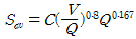
에서 Q가 의미하는 것은?- 암석계수
- 발파공당 TNT의 양
- 실제 사용폭약의 강도
- 발파공당 파괴암석의 체적
(정답률: 28%)
23. 누두공 시험에 대한 설명으로 틀린 것은?
- 장약을 위한 발파공이 약선으로 작용한다.
- 누두공의 형상은 원뿔형보다 원뿔형에 가까운 형상일 때가 많다.
- 적은 시험횟수로 폭약의 위력, 저항성, 약량산정을 위한 데이터 획득이 가능하다.
- 표준장약발파의 장약량은 누두공의 부피에 비례한다.
(정답률: 23%)
24. 공발의 일반적인 원인으로 틀린 것은?
- 삼발발파의 실패에 의한 자유면 형성이 불량할 때
- 자유면에 경사천공을 했을 때
- 기폭전원의 전력이 부족할 때
- 암반에 균혈층이 있을 때
(정답률: 25%)
25. 일반 계단식 발파에서 Langefors식을 이용하여 발파공 하부의 최대저항선을 산출할 때 고려해야 할 변수로 거리가 먼 것은?
- 폭약의 상대강도
- 발파공의 구속정도
- 공간격 대 저항선의 비
- 발파공당 파괴암석의 체적
(정답률: 30%)
26. 다음은 심빼기 발파 중 평행천공의 한 방법을 나타낸 그림이다. 그림이 도시하고 있는 발파법은?
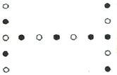
- Clover leaf cut
- Box cut
- Line cut
- Spiral cut
(정답률: 28%)
27. 발파계수에 관계되는 설명 중 틀린 것은?F
- 완전한 전색인 상태의 전색계수는 1.0이다.
- 강력한 폭약일수록 폭약계수 값은 크게 된다.
- 누두공의 크기와 모양은 누두지수의 함수 f(n)과 관계된다.
- 암석계수는 암석 약 1m3을 발파할 때 필요로 하는 폭약량을 뜻한다.
(정답률: 29%)
28. 비산에 대한 설명 중 틀린 것은?
- 과장약으로 인해 비산이 발생한다.
- 비산의 발생은 점화순서와 관계없다.
- 최소저항선이 1m이하이고, 계단높이도 작은 경우 지발시간이 짧아야 한다.
- 천공오차로 인해 국부적인 장약공의 집중현상으로 비산이 발생한다.
(정답률: 20%)
29. 발파에 의해 발생한 지반진동을 단순조화진동(정현진동)으로 모사한다면, 지반진동을 표시하는 가속도(A)와 변위(D=D0sinωt)의 관계는? (단, D0: 변위진폭, ω: 각속도, t: 시간, f: 주파수이다.)
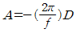
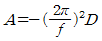
- A=-(2πf)D
- A=-(2πf)2D
(정답률: 25%)
30. 누두지수의 함수 중 Brallion의 제안식으로 옳은 것은?
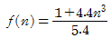
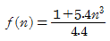
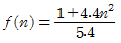
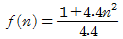
(정답률: 23%)
31. 벤치발파 시 파쇄입도는 암반이 균일할수록 보다 쉽게 필요로 하는 입도를 얻을 수 있다. 다음 중 큰 파쇄입도를 얻기 위한 방법으로 가장 적당한 것은?
- 지발발파를 실시한다.
- 상부장약을 증가시킨다.
- 1회당 1열씩 기폭시킨다.
- 최소저항선을 천공간격보다 아주 작게 한다.
(정답률: 25%)
32. 천공간격(S)이 6m, 벤치높이(H)가 10m로 MS 발파를 할 때 저항선(B)은 얼마인가?
- 2.56m
- 3.60m
- 5.48m
- 7.20m
(정답률: 19%)
33. 발파공의 지름이 Amm, 폭약의 지름이 Bmm일 때 Decoupling 지수가 가장 큰 경우는?
- A=45, B=30
- A=45, B=17
- A=76, B=30
- A=76, B=40
(정답률: 32%)
34. 발파현장 인근에 보안물건으로 인하여 분산장약(Deck charge)을 적용하고자 한다. 발파공내가 건조한 경우와 습윤된 경우의 삽입 전색장은 각각 얼마인가? (단, 발파공의 직경은 75mm이다.)
- 건조공 450mm, 습윤공 900mm
- 건조공 450mm, 습윤공 1200mm
- 건조공 900mm, 습윤공 450mm
- 건조공 1200mm, 습윤공 450mm
(정답률: 22%)
35. 발파 폭풍압의 구성요인 중 RPP(Rock Pressure Pulse)란 무엇인가?
- 불완전한 전색으로 인한 전색물분출파
- 발파공으로부터 방출되는 가스누출파
- 발파지점에서 약간 떨어진 곳의 지반 진동으로 인한 반압파
- 발파지점으로부터 암반 자체의 변형으로 인한 기압파
(정답률: 22%)
36. 조절발파방법으로서 굴착 예정면의 발파공들을 본 발파에 앞서 발파하는 방법은?
- 스무스 발파
- 프리 스프리팅
- 라인 드릴링
- 쿠션 발파
(정답률: 20%)
37. 폭속은 화약의 위력을 나타내는 일반적인 인자로서 사용 및 저장조건에 따라 달라진다. 폭속을 지배하는 요인 중 관계가 없는 것은?
- 폭약의 약경 및 용기의 강도
- 폭약의 장전비중, 입도, 밀도
- 폭약의 흡습 및 기폭강도
- 폭약의 천공간격 및 발파시차
(정답률: 27%)
38. 구조물해체에 대한 주요 공정을 올바르게 나열한 것은?
- 방호공사→사전취약화공사→천공공사→장전→결선→전색→발파
- 천공공사→사전취약화공사→방호공사→장약→결선→전색→발파
- 사전취약화공사→천공공사→방호공사→장전→결선→전색→발파
- 사전취약화공사→천공공사→방호공사→장전→전색→결선→발파
(정답률: 25%)
39. 발파해체 공법의 특성에 대한 설명으로 틀린 것은?
- 공사기간의 단축과 공사비의 절감 효과가 있다.
- 구조물의 주요 지지점만을 선별하여 발파시킨다.
- 콘크리트와 같은 취성재료들은 붕괴 후 상당한 파쇄가 이루어진다.
- 구조물의 각 부재들은 충격하중과 전단력이 아닌 인장력에 의한 연속파괴가 발생한다.
(정답률: 25%)
40. 누두지수(n)=1.3일 때 Marescott 공식에 의해 누두지수의 함수 f(n) 값을 구하면 얼마인가?
- 1.26
- 1.59
- 1.96
- 2.34
(정답률: 24%)
3과목: 암석역학
41. 암반의 변형개수를 측정하기 위한 시험이 아닌 것은?
- 수압파쇄시험
- 압력터널시험
- 평판재하시험
- Goodman Jack 시험
(정답률: 23%)
42. 암반의 변형특성에 대한 설명으로 틀린 것은?
- 암반은 풍화가 될수록 탄성계수가 저하된다.
- 암반은 공극률이 커질수록 변형계수는 커진다.
- 암반은 절리 간격이 작을수록 전단강도는 저하된다.
- 암반의 변형특성은 암반내에 존재하는 불연속면의 성질 등에 의해 좌우된다.
(정답률: 7%)
43. 지름이 3cm, 길이가 6cm인 원주형 암석 시편에 5kN의 인장하중을 가한 결과 시편의 길이가 0.01mm 늘어났다면, 이때의 응력(σt)과 영률(E)은?
- σt=2.78MPa, E=1.7×105MPA
- σt=3.⑤MPa, E=2.5×105MPA
- σt=7.07MPa, E=3.1×104MPA
- σt=7.07MPa, E=4.2×104MPA
(정답률: 13%)
44. 시험법과 내용이 올바르게 짝지어진 것은?
- Shore경도기 : 암석의 경도를 측정하는 데 사용한다.
- Penetrometer : 암반의 공극률을 측정하는 데 사용한다.
- Creep시험 : 암반의 접선탄성계수를 측정하는 데 사용한다.
- 압열인장시험 : Dog bone 형태의 시료를 이용하여 인장강도를 구한다.
(정답률: 17%)
45. 평판 상부면과 45° 기울어진 평판 내 경사면에 발생하는 수직응력(σ)과 전단응력(τ)의 값은? (단, 평면응력 상태에서 σy=100MPa, σx=50MPa이다.) (문제 복원 오류로 보기 내용이 정확하지 않습니다. 정확한 내용을 아시는 분께서는 오류신고 또는 게시판에 작성 부탁드립니다.)
- σ=25MPa, τ=45MPa
- σ=25MPa, τ=45MPa
- σ=25MPa, τ=45MPa
- σ=25MPa, τ=45MPa
(정답률: 18%)
46. 사면에서의 암반분류법으로 사용되는 SMR(Slop Mass Rating)법에서 고려되는 요소가 아닌 것은?
- 지질학적 강도지수
- 사면과 불연속면의 주향방향의 차이
- 사면의 채굴방법
- 기본 RMR 평가 값
(정답률: 17%)
47. 암반분류 방법인 RMR 분류법에 대한 설명으로 틀린 것은?
- RQD(암질지수)값이 클수록 RMR값은 커진다.
- 절리면의 간격이 넓을수록 RMR값은 커진다.
- 절리면의 연속적 일수록 RMR값은 커진다.
- 절리면에 작용하는 수압이 낮을수록 RMR값은 커진다.
(정답률: 19%)
48. 응력-변형률의 관계는 등반탄성체에서 평면응력의 경우 σ=[D]ε과 같은 행렬식으로 간단히 표현할 수 있다. 이때의 행렬식이 다음식과 같다면 (A)에 알맞은 것은? (단, E: 영률, v: 푸아송 비이다.)
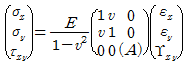
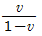
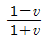
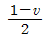
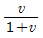
(정답률: 22%)
49. 암석의 물리적 성질에 대한 설명으로 틀린 것은?
- 동탄성계수는 정탄성계수보다 항상 작다.
- 암석에 틈이 있으면 탄성파속도는 감소한다.
- 종파(P파) 속노는 횡파(S파) 속도보다 빠르다.
- 암석에 구속압을 가하면 탄성파속도는 증가한다.
(정답률: 22%)
50. 지름 50mm, 길이 30mm의 압열인장시험편(Brazilian Disk)에 대한 간접인장강도 시험 결과 파괴하중이 5kN이었다면, 이 암석의 압열인장강도는?
- 1.59Mpa
- 2.12Mpa
- 5.59Mpa
- 10.12Mpa
(정답률: 18%)
51. 일정수직하중 조건의 절리면 직접전단시험에서 얻어진 전단변위에 대한 수직변위 곡선의 기울기각을 무엇이라 하는가?
- 전단강성
- 수직강성
- 팽창각
- 마찰각
(정답률: 14%)
52. 터널의 분류 중 시공 방법에 따른 분류에 속하지 않는 것은?
- 배수 터널
- 실드 터널
- 침매 터널
- 개착식 터널
(정답률: 22%)
53. 일정수직하중 조건 하에서 톱으로 자른 매끄러운 절리면에 대해 직접전단시험을 실시하는 경우 발생할 수 잇는 거동으로 옳은 것은?
- 수직응력이 증가함에 따라 전단강도는 감소한다.
- 최대전단응력에 도달한 이후 전단변위가 증가함에 따라 전단응력은 급격히 감소한다.
- 최대전단응력에 도달한 이후 전단변위가 증가함에 따라 전단응력은 증가한다.
- 최대전단응력에 도달한 이후 전단응력의 저하가 거의 발생하지 않는다.
(정답률: 24%)
54. 일축압축강도가 100MPa인 암석에 대해 봉압이 3MPa인 삼축압축시험에서 얻어진 파괴 강도는 110MPa이었다면, 무결암(Intacrock)에 대한 Hoek-Brown 상수 m의 값은 얼마인가?
- 0.87
- 1.42
- 2.15
- 4.83
(정답률: 13%)
55. Londe는 사면의 안정성을 정의할 때 고려되는 변수들에 대해 서로 다른 안전율을 제시하였는데, 다음 중 가장 낮은 안전율이 적용되는 변수는?
- 수압
- 점착강도(c)
- 내부마찰각(ø)
- 사면블록이나 쐐기의 중량
(정답률: 25%)
56. 암석시험 조건이 암석의 압축강도에 미치는 일반적인 영향으로 옳은 것은?
- 시험편의 길이가 커질수록 압축강도는 증가한다.
- 시험편 단면 모양이 원형에 가까워질수록 압축강도는 작아진다.
- 하중 재하 속도가 증가할수록 압축강도는 작아진다.
- 시험편의 직경에 비해 길이가 수배 이상 크면 좌굴현상이 일어날 수 있다.
(정답률: 19%)
57. 스프링(spring)과 대시포트(dashpot)를 직렬로 연결한 역학적 모형으로 표시할 수 있는 복합체는?
- Kelvin 물체
- Maxwell 물체
- Bingham 물체
- St, Venant 물체
(정답률: 35%)
58. 초기지압 측정법 중 응력개방법에 해당되는 것은?
- 플랫 잭법
- 공경변형법
- 변형률회복법
- 미소파괴음 이용법
(정답률: 24%)
59. 다음 중 tension cut-off로서 가장 적당한 것은?
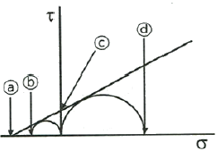
- ⓐ
- ⓑ
- ⓒ
- ⓓ
(정답률: 25%)
60. 종파속도(Vv)와 횡파속도(Vs)를 이용한 암석의 동적 물성 산정식 중 올바른 것은? (단, Ed: 영률, v: 푸아송 비, ρ: 암반의 밀도)
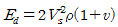
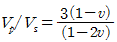
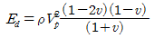
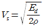
(정답률: 23%)
4과목: 화약류 안전관리 관계 법규
61. 지하 1급저장소의 지반의 두께가 15m 일 경우 저장할 수 있는 폭약 양의 기준으로 옳은 것은?
- 5톤 이하
- 7톤 이하
- 9톤 이하
- 11톤 이하
(정답률: 32%)
62. 운반신고를 하지 아니하고 운반할 수 있는 화약류의 수량 기준으로 옳은 것은?
- 총용뇌관 15만개
- 실탄(1개당 장약량 0.5g 이하) 20만개
- 폭발천공기 1000개
- 장난감용 꽃불류 500kg
(정답률: 42%)
63. 화약류의 판매업이나 제조업의 허가를 취소할 수 있는 사유로 틀린 것은?
- 공공의 안녕질서를 해칠 염려가 있다고 믿을 만한 상당한 이유가 있을 때
- 총포·도검·화약류 등의 안전관리에 관한 법률을 위반하였을 때
- 사업을 시작한 후 정당한 사유 없이 6개월 이상 휴업한 때
- 거짓이나 그 밖의 옳지 못한 방법으로 허가를 받은 때
(정답률: 32%)
64. 화약류 저장소의 설치허가신청을 할 때 저장소 및 그 부근의 약도를 허가신청서에 첨부하여야 하는데 약도의 범위로 옳은 것은?
- 사방 100m 이내
- 사방 300m 이내
- 사방 500m 이내
- 사방 1km 이내
(정답률: 34%)
65. 다음 중 화약류 양수허가의 유효기간에 대한 설명으로 옳은 것은?
- 3개월을 초과할 수 없다.
- 6개월을 초과할 수 없다.
- 1년을 초과할 수 없다.
- 2년을 초과할 수 없다.
(정답률: 48%)
66. 화약류를 운반하는 통로의 기준으로 옳지 않은 것은?
- 차량으로 운반하는 때에는 그 차량의 폭에 3.5미터를 더한 너비 이하의 도로를 통행하지 아니할 것
- 화기를 취급하는 장소 또는 발화성이나 인화성이 있는 물질을 쌓아둔 장소에 가ᄁᆞ이 가지 아니할 것
- 번화가 그 밖의 사람의 왕래가 빈번하거나 사람이 많이 모인 곳을 지나가지 아니할 것
- 기준에 맞는 통로로 운반하는 경우에 멀리 돌아가게 되는 등 부득이한 사정이 있더라도 반드시 기준을 적용할 것
(정답률: 32%)
67. 저장중인 다이나마이트 등의 약포에서 니트로글리세린이 스며나와 마루바닥이 오염된 경우 니트로글리세린을 분해시키는데 사용되는 혼합한 액체의 원료가 아닌 것은?
- 식물유제
- 알코올
- 수산화나트륨
- 물
(정답률: 30%)
68. 화약류의 응급조치와 관련하여 틀린 것은?
- 화약류저장소의 부근에 화재가 발생하여 긴급을 요할시 화약류의 소유자는 응급조치이전에 경찰관서에 신고하여야 한다.
- 화약류저장소의 부근에 화재가 발생하여 긴급을 요할시 화약류의 관리자는 응급조치를 하고 경찰관서에 신고하여야 한다.
- 화약류저장소의 부근에 화재가 발생하여 긴급을 요할시 화약류저장소 설치자는 응급조치를 하고 경찰관서에 신고하여야 한다.
- 화약류의 안정도에 이상이 있는 경우도 응급조치에 해당되어 화약류저장소 설치자는 응급조치를 하고 경찰관서에 신고하여야 한다.
(정답률: 18%)
69. 화약류관리보안책임자의 면허를 반드시 취소해야 하는 경우가 아닌 것은?
- 국가기술자격법에 의하여 자격이 취소된 때
- 면허를 다른 사람에게 빌려준 경우
- 화약류의 취급과정에서 과실로 5명의 사람이 사망한 때
- 알코올 중독자인 것이 확인되었을 때
(정답률: 27%)
70. 화약류운반 신고필증 반납에 관한 설명으로 틀린 것은?
- 신고필증의 반납은 예외 없이 발송지를 관할하는 경찰서장에게 하여야 한다.
- 운반을 완료한 때에는 신고필증을 지체없이 반납하여야 한다.
- 운반기간이 경과한 때에는 신고필증을 지체없이 반납하여야 한다.
- 운반을 하지 아니하게 된 때에는 신고필증을 지체없이 반납하여야 한다.
(정답률: 34%)
71. 불발된 장약에 대한 처리방법으로 틀린 것은?
- 불발된 천공된 구멍으로부터 60cm이상의 간격을 두고 평행으로 천공하여 다시 발파하고 불발한 화약류를 회수할 것
- 불발된 천공된 구멍에 고무호오스로 물을 주입하고 그 물의 힘으로 메지와 화약류를 흘러나오게 하여 발발된 화약류를 회수할 것
- 불발된 발파공에 압축공기를 넣어 메지를 뽑아내거나 뇌관에 영향을 미치지 아니하게 하면서 조금씩 장전하고 다시 점화할 것
- 규정된 방법에 의하여 불발된 화약류를 회수할 수 없는 때에는 즉시 관할 경찰서에 신고할 것
(정답률: 24%)
72. 다음은 화약류 운반방법의 기술상의 기준이다. ( )안의 알맞은 수치를 차례대로 나타낸 것은?
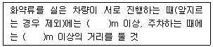
- 100, 200
- 100, 50
- 50, 100
- 200, 100
(정답률: 38%)
73. 다음 중 화약류 제조업의 허가를 받을 수 있는 사람은?
- 금고 이상의 실형을 선고를 받고 그 집행이 끝나거나 집행을 받지 아니하기로 확정된 후 3년이 지난 사람
- 금고 이상의 형의 집행유예선고를 받고 그 유예기간이 끝난 날부터 6개월이 지난 사람
- 19세인 사람
- 파산선고를 받고 복권되지 아니한 사람
(정답률: 36%)
74. 화약류 판매업의 시설기준으로 틀린 것은?
- 자가전용의 화약류 저장소를 설치할 것
- 화약류 저장소에는 차량에 의한 안전운반이 가능하도록 저장소 입구까지 진입로를 개설할 것
- 화약류 저장소 입구에는 경비초소 대신 자동방범설비를 설치할 것
- 판매업소 및 화약류 저장소의 위치는 유통과정에 있어서 위험성이 없는 곳일 것
(정답률: 38%)
75. 화약류 1급저장소와 보안물건 사이에 규정에 의한 흙둑을 저장소 지붕 높이의 4분의 5 이상의 높이로 쌓은 경우, 폭약 30톤을 저장시 제2종 보안물건과의 보안거리의 기준으로 옳은 것은?
- 310m 이상
- 290m 이상
- 270m 이상
- 250m 이상
(정답률: 27%)
76. 1급 화약류저장소에 폭약 10톤을 저장하고자 한다. 저장소 부근에 공원이 있을 경우 보안거리는 얼마 이상을 유지하여야 하는가?
- 170m 이상
- 190m 이상
- 250m 이상
- 300m 이상
(정답률: 30%)
77. 다음 ( )안에 들어갈 내용을 차례대로 나타낸 것은?
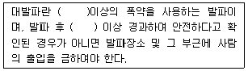
- 300kg, 30분
- 200kg, 30분
- 300kg, 15분
- 200kg, 15분
(정답률: 23%)
78. 화약류 폐기의 기술상 기준으로 틀린 것은?
- 황산염, 염소산염 등의 수용성분을 주로 하는 화약 또는 폭약(질산에스텔 또는 니트로기3 이상이 함유된 니트로화합물을 함유하는 것을 포함)은 안전한 수용액으로 하여 강물 등에 흘려버릴 수 있다.
- 얼어 굳어진 다이나마이트는 완전히 녹여서 연소처리하거나 500g 이하의 적은 양으로 나누어 순차로 폭발처리 한다.
- 화공품(도화선 및 도폭선 제외)은 적은 양으로 포장하여 땅속에 묻고 공업용 뇌관 또는 전기뇌관으로 폭발처리 한다.
- 도화선은 연소처리 하거나 물에 적셔서 분해처리 한다.
(정답률: 34%)
79. 다음 중 화공품에 속하지 않는 것은?
- 신관 및 화관
- 무연화약
- 미진동파쇄기
- 신호염관 및 신호화전
(정답률: 34%)
80. 화약류관리보안책임자 면허를 받은 사람이 국가기술자격법에 의하여 자격이 정지되었을 경우에 대한 설명으로 옳은 것은?
- 면허를 취소하여야 한다.
- 재교육을 받아야 한다.
- 3년간 면허를 정지하여야 한다.
- 정지기간 동안 면허의 효력을 정지하여야 한다.
(정답률: 32%)
5과목: 굴착공학
81. Q-system에 의해 암반을 분류하기 위해 대상 암반에 대한 조사 및 시험한 결과가 아래 [조건]과 같을 때 Q값은?
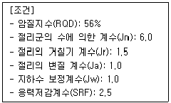
- 2.5
- 5.6
- 15.6
- 35.0
(정답률: 24%)
82. 굴착 지보비(ESR)가 가장 낮은 공동은?
- 일시적인 광산공동
- 소규모 고속도록 터널
- 지하 핵 발전소
- 수력발전용 수로터널
(정답률: 25%)
83. 다음 중 암반의 사면 파괴 형태가 아닌 것은?
- 사면 내 파괴
- 쐐기 파괴
- 평면 파괴
- 전도 파괴
(정답률: 17%)
84. 암반분류법인 RMR 분류법의 구성 인자 중 가장 큰 배점을 가지는 것은?
- 절리간격
- 절리상태
- 암질지수(RQD)
- 무결암의 일축압축강도
(정답률: 27%)
85. 암반의 초기응력을 구하기 위한 방법 중 일축압축시험에서 얻어진 응력-변형률 곡선의 기울기의 변화로부터 초기응력을 산정하는 방법은?
- AE법
- DRA법
- Door stopper법
- Flat jack법
(정답률: 18%)
86. 터널 굴착 중 일상적으로 시행되어야 하는 시공중 조사는?
- 경내 시추
- 터널내 탐사
- 막장 관찰
- 실내시험
(정답률: 28%)
87. 지하에 침투유가 존재하지 않고 점차력이 없는 암반사면의 경사각이 α, 마찰각이 ø일 때 다음 중 가장 안전한 사면은?
- α=ø
- α＜ø
- α＞ø
- α≥ø
(정답률: 32%)
88. 사면보강공법 중 록앵커(rock anchor) 공법에 대한 설명으로 틀린 것은?
- 앵커의 인장력으로 암반블록의 저단 저항력을 증가시켜 암반을 안정화시키는 공법이다.
- 대단위 사면붕괴에 대한 보강대책으로 유리하다.
- 시간경과에 따른 긴장재의 이완으로 인장력이 증가하는 효과를 이용한다.
- 파쇄가 심하고 절리가 발달된 지반에서는 적용성이 떨어진다.
(정답률: 18%)
89. 지반조건에 따라 일상계측에 추가하여 선정하는 정밀계측에 해당하는 것은?
- 터널 내 관찰조사
- 내공변위 측정
- 천단침하 측정
- 지중변위 측정
(정답률: 25%)
90. 터널공사에서 터널의 안정성을 확보하기 위해 사용하는 보조공법 중 막장의 천반을 안정화시키기 위한 보조공법이 아닌 것은?
- 훠폴링 공법
- 파이프 루프 공법
- 강관다단그라우팅 공법
- 프레셔 와이어 공법
(정답률: 23%)
91. 터널 내 환기에 있어서 압력손실에 대한 설명으로 옳은 것은?
- 터널 길이와 직경에 비례
- 터널 내 평균 풍속의 제곱에 비례
- 공기 비중에 반비례
- 중력가속도에 비례
(정답률: 25%)
92. NATM 공법의 기본원이로서 옳은 것은?
- 지보재의 지지력만으로 터널 안정성을 확보한다.
- 강성지보보다 가축성지보 적용을 원칙으로 한다.
- 계측결과에 따라 지보량과 시공방법을 변경할 수 없다.
- 지반상태가 극히 불량한 경우를 제외하고는 인버트를 부설하지 않는다.
(정답률: 27%)
93. 암석의 밀도가 2500kg/m3이고 중력가속도가 10m/s2일 때, 지표면으로부터 깊이 500m인 지점에서의 수직응력의 크기는?
- 10MPa
- 12.5MPa
- 25MPa
- 50MPa
(정답률: 30%)
94. 그림과 같이 반무한 탄성암체 표면의 한 점인 P점에 2000kN의 집중하중이 연직방향으로 작용할 경우 P점의 연직방향과 30°, 직선거리 20m되는 지점 A의 수직응력(σZ)은?
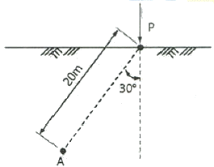
- 1.55kPa
- 15.5kPa
- 7.75kPa
- 77.5kPa
(정답률: 25%)
95. 튼튼한 강재의 통을 지반 중에 밀어넣고 진행시켜 그 선단부 지반의 붕괴를 막으면서 굴착하고 후방부에 복공을 구축하는 공법은?
- 침매공법
- 실드공법
- 언더피닝공법
- 로드헤더공법
(정답률: 25%)
96. 흙의 통일분류법에서 실트질 모래를 나타내는 기호는?
- GW
- SM
- CL
- SC
(정답률: 19%)
97. 터널굴착 시 지하수위를 저하시키기 위한 배수공법으로 알맞은 것은?
- 압기공법
- 동결공법
- 약액주입공법
- 웰 포인트공법
(정답률: 32%)
98. 지반조사에 사용되는 물리탐사방법이 아닌 것은?
- 전기탐사
- 탄성파탐사
- 시추공 속도검층
- 시추공 공내재하시험
(정답률: 30%)
99. 소성한계가20%, 액성한계가 60%인 흙의 자연함수비가 40%인 경우 흙의 상태와 액성지수로 옳은 것은?
- 소성상태, 0.5
- 소성상태, 1.0
- 액체상태, 0.5
- 액체상태, 1.0
(정답률: 20%)
100. 수갱을 굴착할 때 사용되는 작업발판으로서 상부에서의 폐석 낙하에 대한 보호설비를 겸하는 장비는?
- 백호우
- 버킷
- 키블
- 스카폴드
(정답률: 29%)